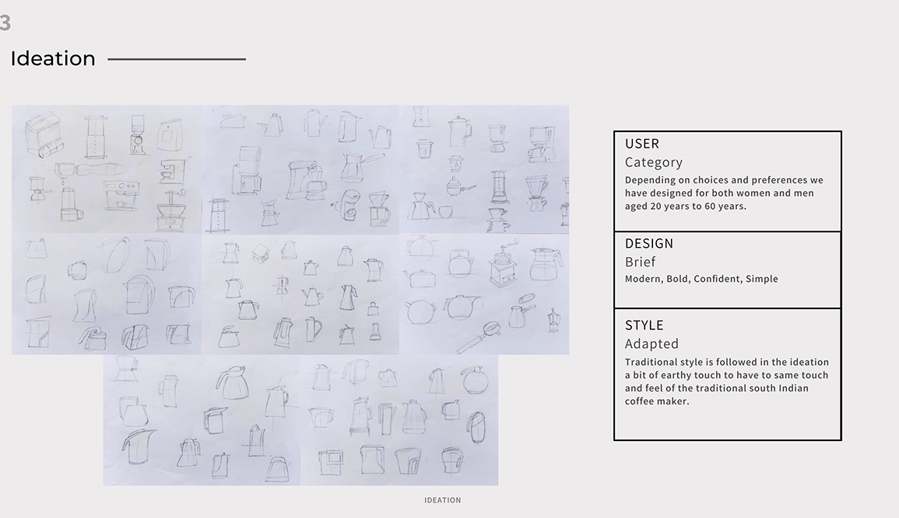
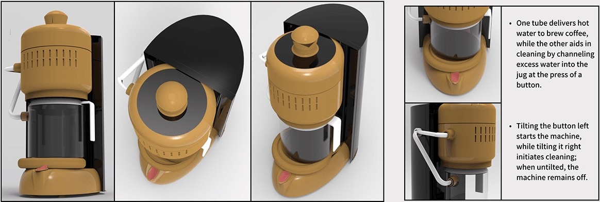
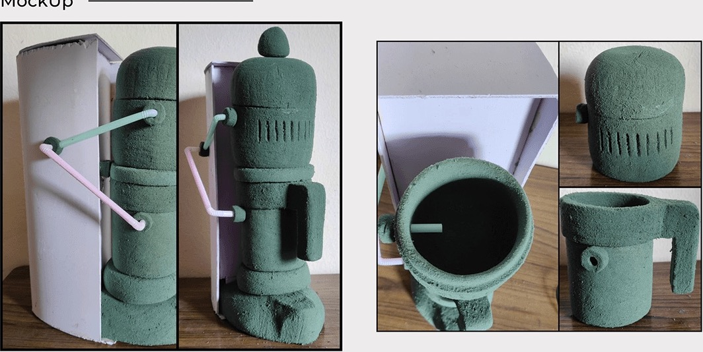

Need identification
Four needs came out of the research. Brewing coffee itself, the primary function. Convenience: quick coffee at home or at work, compared with manual methods. Customization of strength and flavour, through brew time and the coffee-to-water ratio. And energy efficiency, with features like auto shutoff and energy-saving modes.
Mrs. Lakshmi, 62
The persona wants high-quality beans, a traditional South Indian coffee filter, fresh milk and jaggery, a well-worn tumbler, and time to connect with family and friends over a cup. Her frustrations are keeping up with an active life, keeping traditional cooking alive in a world of fast food, and finding time for herself. Her goals: keep brewing the perfect filter coffee for her family, share her coffee-making tips, and pass on her love of South Indian culture to her grandchildren.
Ideation
The brief was modern, bold, confident and simple, for both women and men aged 20 to 60. The traditional style was followed in the ideation with a bit of an earthy touch, to keep the same touch and feel as the traditional South Indian coffee maker.

Final concept
One tube delivers hot water to brew the coffee, while the other aids in cleaning by channelling excess water into the jug at the press of a button. Tilting the button left starts the machine and tilting it right starts cleaning; untilted, the machine stays off.

Mockup
The form was tested as a foam model, with the tubes and handle in place.
